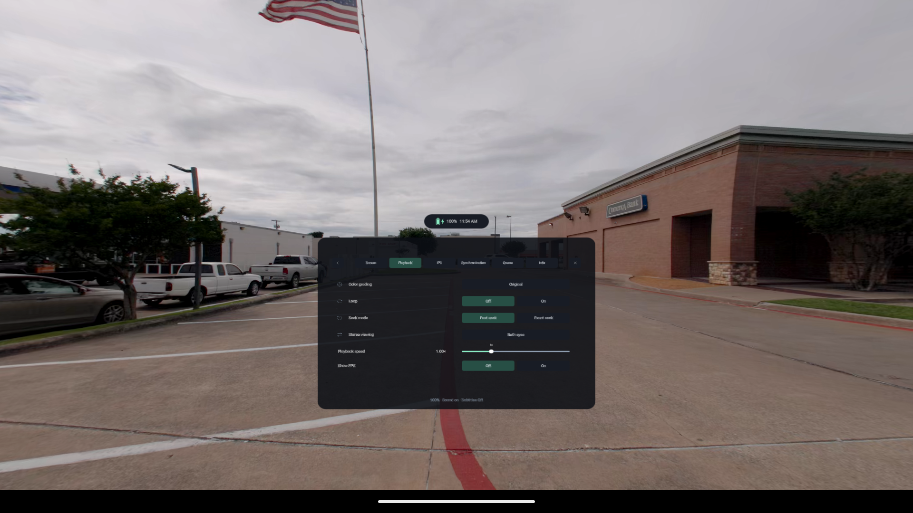
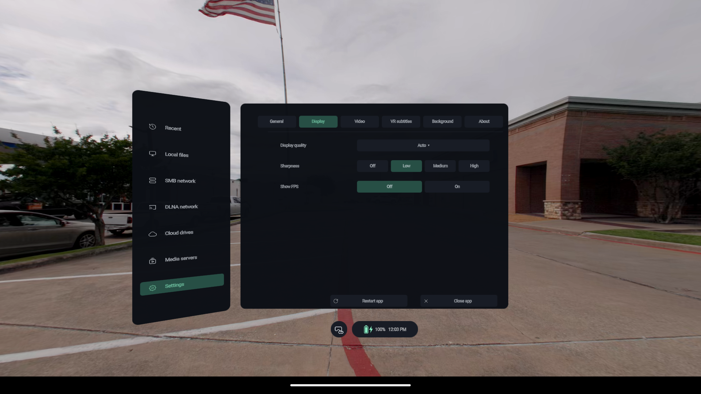

平面影片，也能拥有大屏幕。
按需调整屏幕大小、距离和曲率。选择音轨和字幕，标记想再看一遍的时刻。
为你的头显而生
为 Meta Quest 与 PICO 打造的开源 VR 媒体播放器。在虚拟屏幕上看影片，走进沉浸场景，把自己的媒体库带到眼前。
Android 头显 · 可选 AI · 独立维护
真实软件画面 · Android 虚拟机开发版 · 点击查看原图
你的媒体，你的选择
从一段熟悉的影片，到可以转头探索的场景，按内容选择观看方式。
按需调整屏幕大小、距离和曲率。选择音轨和字幕，标记想再看一遍的时刻。
180°、360° 与鱼眼投影，支持左右或上下立体布局；支持范围内的空间照片与视频可保留立体视图。
从本地文件开始，也可连接 SMB、WebDAV、DLNA 和支持的媒体服务器。来源与账号权限决定可用功能。
软件实拍
播放偏好与显示画质，在熟悉的控件中调整。


以上均为实际 Android 虚拟机截图，片源为 blandscape-60mbps.mp4。展示当前开发版本的二维调试入口，不代表头显的双眼立体、透视效果或帧率表现。原始视频未随应用提供。
按住抓握键移动画面或窗口；支持的位置可用同手摇杆调整远近。
坐着观看，或开启躺卧模式。跟随是独立开关，可按需要选择。
逐文件观看偏好、时间点书签与播放队列，让再次打开内容更方便。
下载 THRU3D
安装包托管在 GitHub Releases。先选择头显，再决定是否需要实时 AI 功能。
兼容目标包括 Quest 2 和 PICO Neo3。具体表现取决于设备、编码、分辨率及效果。通用 OpenXR 为实验性支持。
本站介绍当前开发版本。已发布 APK 的功能与应用身份可能不同，请以对应发布说明为准。
常见问题
No AI 适合普通视频、照片和已有立体媒体，安装体积更小。AI 版增加支持内容的深度与人物抠像；模型及 GPU 会影响效果。两者的播放后端也有差异，PGS、空间与杜比内容请核对具体版本能力。
启用设备开发者模式，连接电脑并允许 USB 调试，再使用侧载工具安装 APK。完成后从头显的侧载应用列表启动。查看安装步骤 →
先确认片源的投影和立体布局。普通视频用平面；VR180 鱼眼 SBS 片源选择鱼眼和 SBS。投影、左右／上下布局和左右眼顺序是不同设置。
本项目在原仓库 0.6.0 的基础上继续开发，从这一基线起独立维护和发布。请在 NorthBoundWisdom 仓库反馈本版本问题。
NORTHBOUNDWISDOM
探索 NorthBoundWisdom 的兄弟项目。